Android
APK para AndroidApp nativo em Kotlin e Jetpack Compose, com criptografia real dos dados, widget na tela inicial e notificações.
- lockDados criptografados no aparelho
- widgetsWidget de saldo
- notificationsLembretes e notificações
O Finan+ é um app de finanças pessoais simples e leve. Registre gastos e receitas, acompanhe o mês e mantenha seus dados com você — em Android, PWA e Linux.
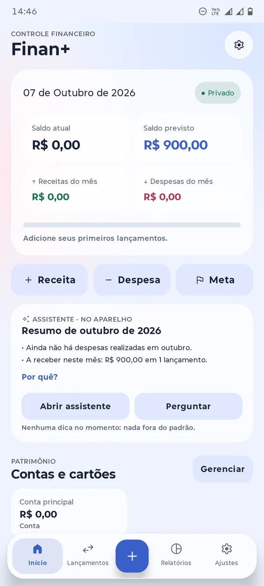
Capturas reais do app no Android, na versão web (PWA) e no Linux, com o visual liquid glass e Material 3.
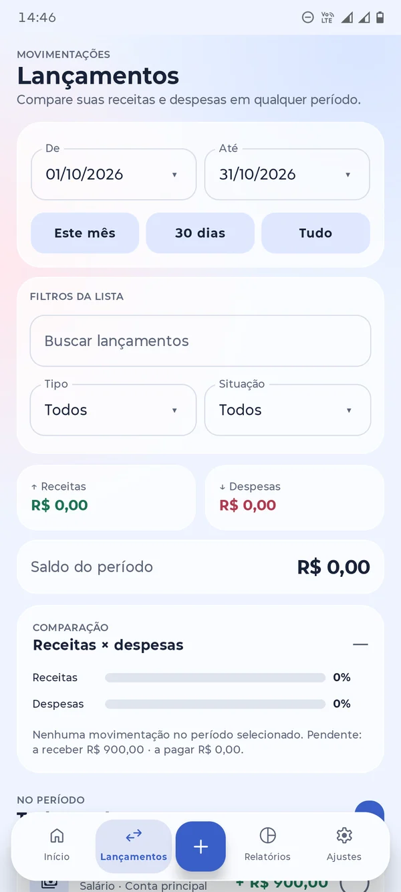
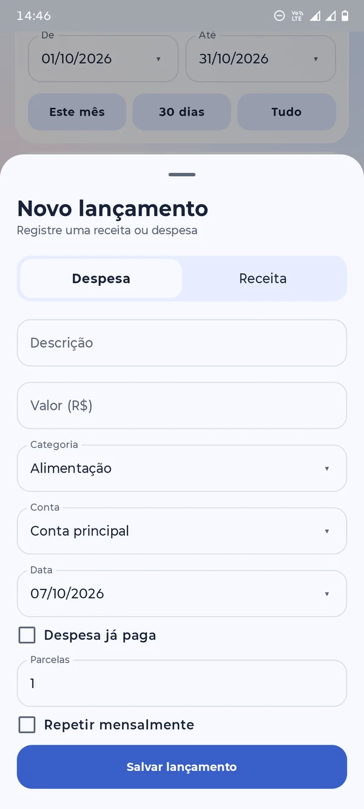
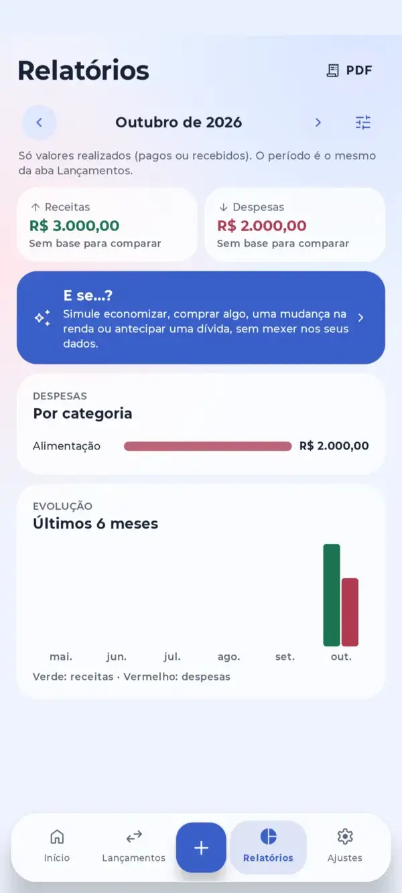
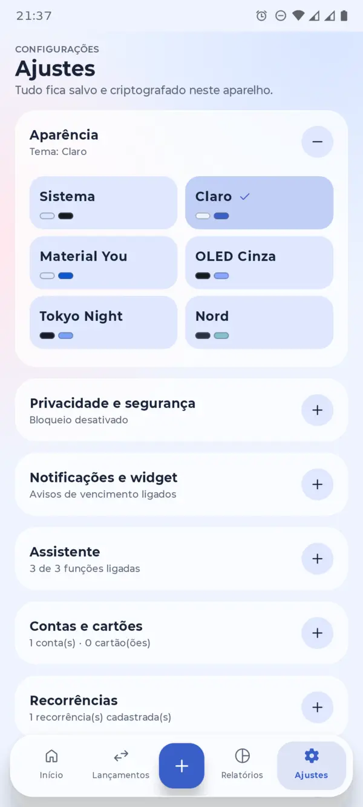
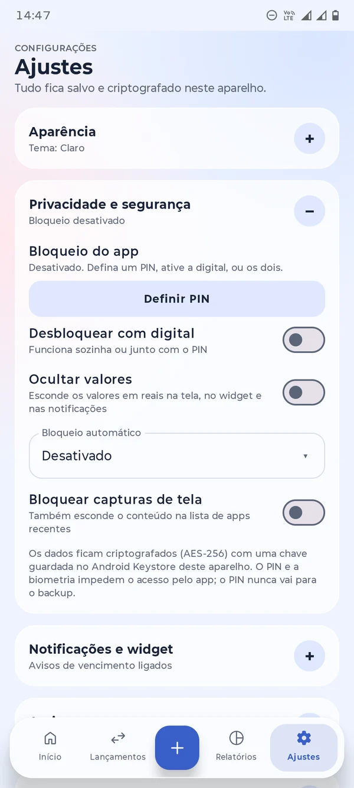
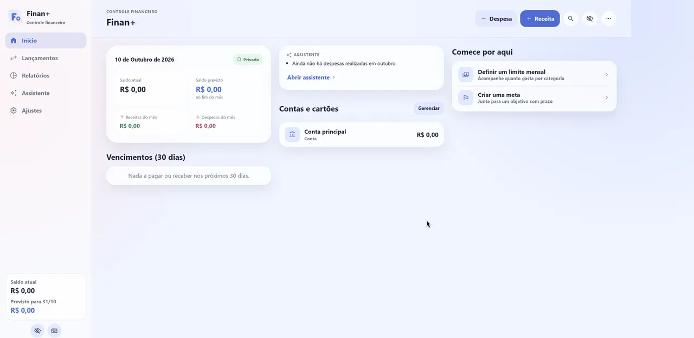
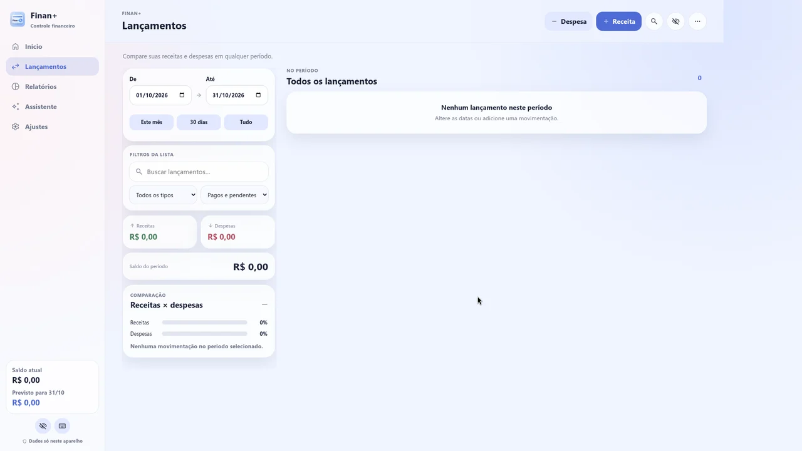
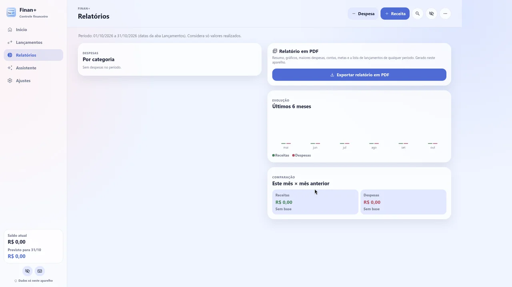
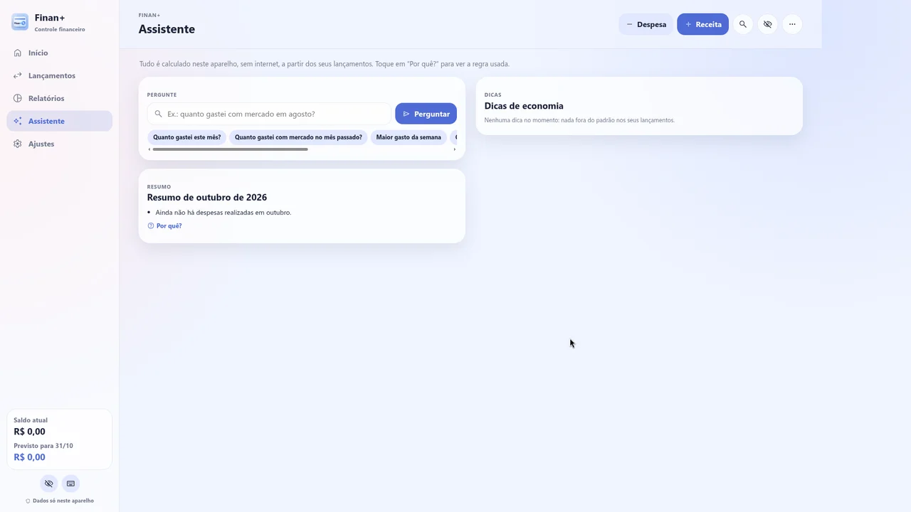
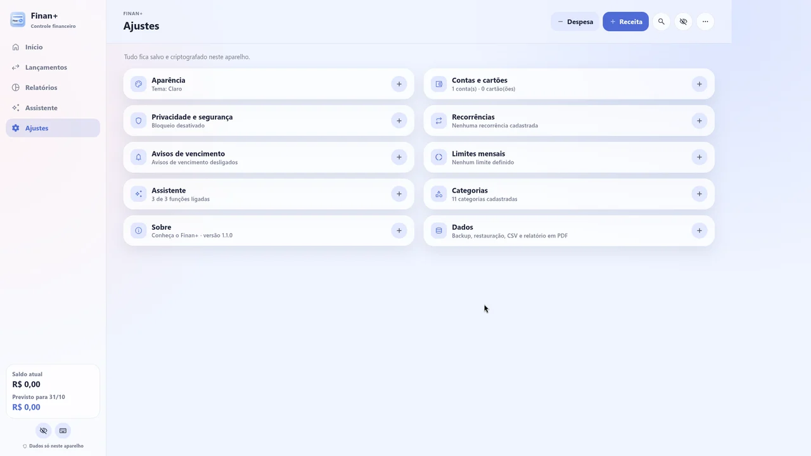
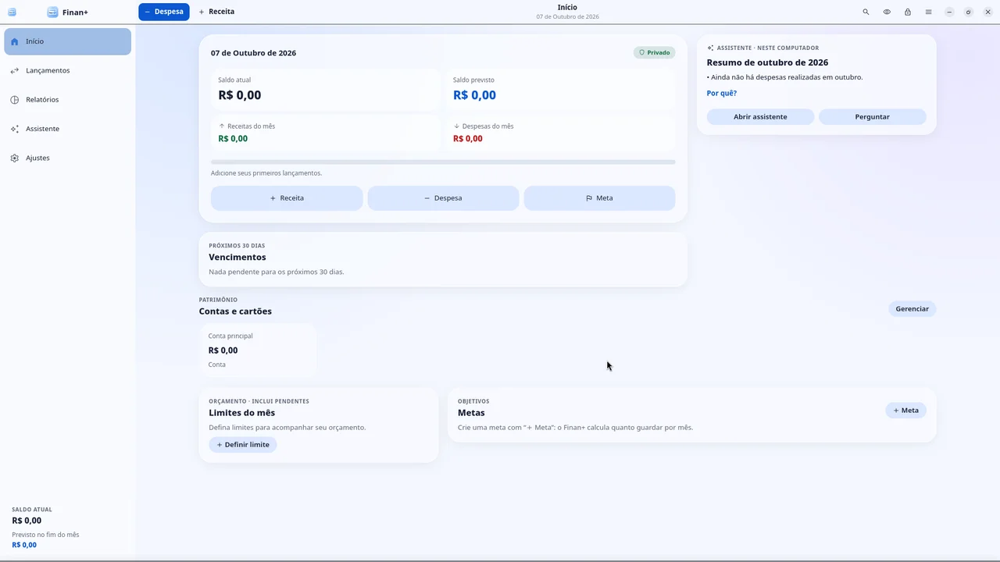
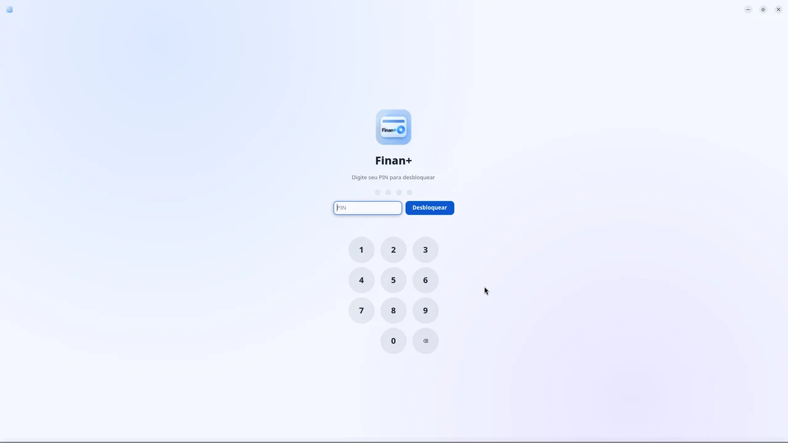
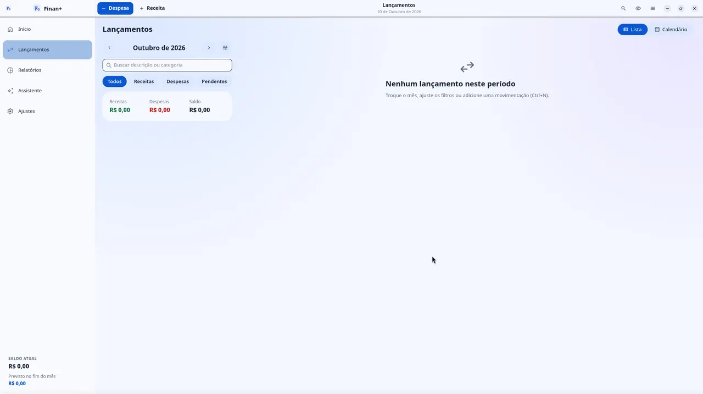
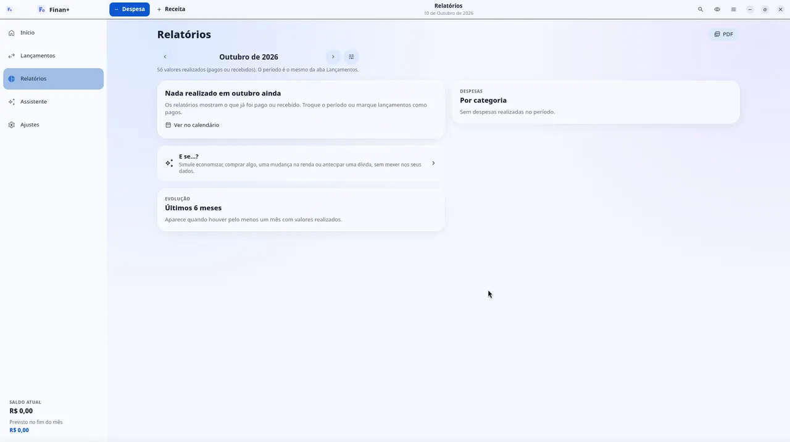
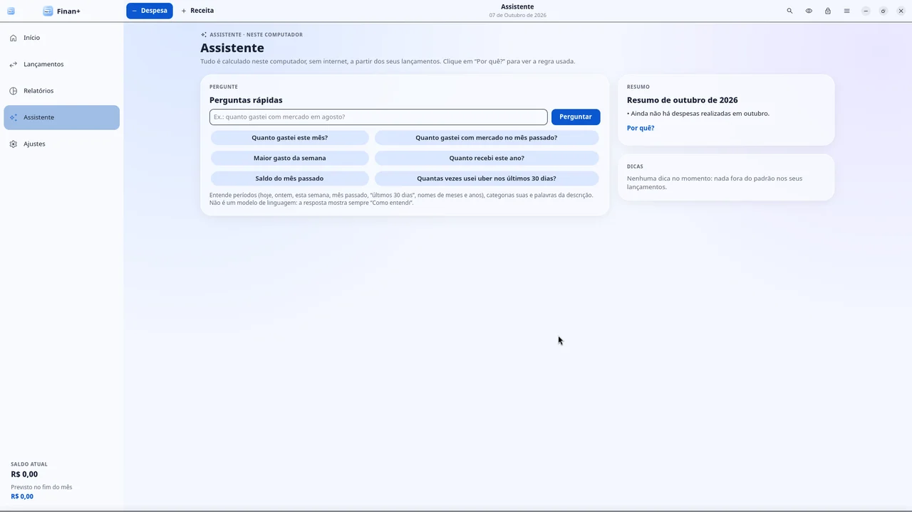
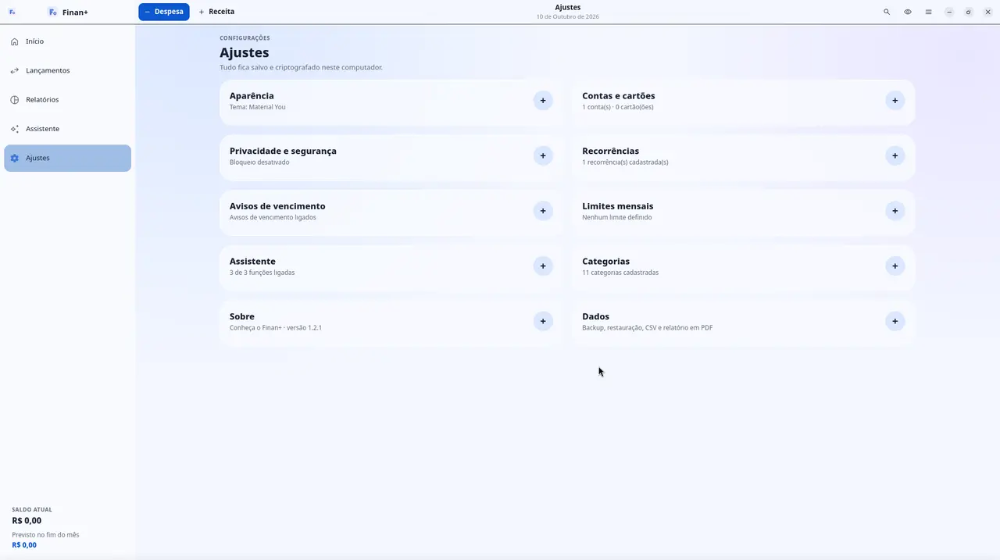
Escolha onde o Finan+ cabe melhor na sua rotina. Cada versão é pensada para o seu dispositivo.
App nativo em Kotlin e Jetpack Compose, com criptografia real dos dados, widget na tela inicial e notificações.
Abra no navegador e instale como app. Layout próprio para desktop e os mesmos recursos da versão Android.
Aplicativo de desktop em C com GTK, leve e nativo, adaptado para telas de computador e notebook.
Ferramentas completas para organizar o mês, planejar o futuro e entender para onde vai o seu dinheiro.
Lançamentos em segundos, com status de pago ou pendente.
Organize saldos por conta e acompanhe cada cartão.
Divida uma compra em várias parcelas automaticamente.
Marque “Repetir mensalmente” e esqueça o retrabalho.
Defina tetos por categoria e acompanhe seu orçamento.
Crie objetivos e veja quanto guardar por mês.
Categorias prontas e totalmente editáveis.
Veja o que pagar e receber nos próximos 30 dias.
Gastos por categoria, evolução de 6 meses e comparação mensal.
Exporte relatórios em PDF e seus dados em CSV.
Resumo do mês, dicas e perguntas rápidas, sem internet.
Sistema, Claro, Material You, OLED Cinza, Tokyo Night e Nord.
Faça um backup em JSON em Ajustes › Dados e restaure em outro aparelho. O backup do Android é compatível com a versão web, então dá para começar no celular e continuar no computador. Sem nuvem e sem conta: o arquivo fica com você.
Escolha sua plataforma e siga os passos. Baixe sempre pelos links oficiais desta página.
sudo apt install ./<arquivo>.deb, trocando <arquivo> pelo nome do arquivo baixado.Todo o código do Finan+ é aberto e documentado. Leia, estude, sugira melhorias ou contribua.
Não. O Finan+ não tem conta, cadastro nem servidor. Tudo fica salvo e criptografado no seu aparelho.
Sim. É gratuito, sem anúncios e de código aberto, sob a licença GPL-3.0. Qualquer pessoa pode ler o código.
Em Ajustes › Dados, toque em Backup JSON e restaure o arquivo na outra versão. O backup do Android é compatível com a versão web.
Não usa nenhuma IA externa. O assistente funciona com regras locais, direto no seu aparelho, sem internet, e mostra a regra usada em cada resposta.
Porque cada uma tem seu próprio código. A versão web (PWA) é feita em JavaScript e roda no navegador. A do Android é um app nativo em Kotlin com Jetpack Compose. A do Linux não é o site empacotado: é um app de desktop nativo, escrito em C com GTK, com layout pensado para computador. As três seguem o mesmo visual e a mesma proposta: offline, sem conta e com os dados no seu aparelho.
Sim. As três versões funcionam offline. A internet só é necessária para baixar ou atualizar o app.
Abra uma issue no repositório da versão que você usa, no GitHub. Toda sugestão é bem-vinda.
Desenvolvedor independente e criador do Finan+.
Criei o Finan+ porque queria uma maneira simples de organizar minhas finanças, sem anúncios, sem cadastro e, principalmente, sem entregar meus dados pessoais a terceiros. Como não encontrei um aplicativo assim, resolvi criar o meu próprio.
Acredito que um aplicativo que cuida do seu dinheiro precisa respeitar sua privacidade e ser transparente. Por isso, o Finan+ é gratuito, de código aberto (GPL-3.0), funciona offline e mantém seus dados criptografados no próprio dispositivo, no Android, na web e no Linux.
Desenvolvo o projeto sozinho, no meu tempo livre, com ferramentas de inteligência artificial como apoio na escrita, revisão e documentação do código. As decisões, os testes e as revisões passam por mim. O app em si não depende de IA externa: o assistente usa regras locais, direto no seu dispositivo, sem internet.
O Finan+ nasceu de uma necessidade pessoal, mas espero que seja útil para quem valoriza simplicidade, liberdade e privacidade.
Feito com dedicação, código aberto e respeito aos seus dados. favorite